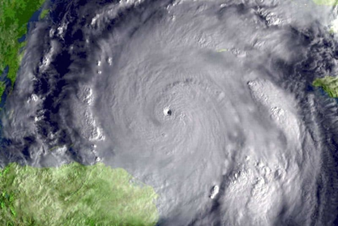

La atmósfera de presión es una unidad de medida cualitativa que se define como la presión que ejerce la atmósfera terrestre a nivel del mar. Se suele utilizar el símbolo atm, es equivalente a 101325 Pa (pascales) y, aunque es frecuente que 1 atm se refiera como el valor de presión normal, la atm no es una unidad del Sistema Internacional de Unidades.
El estado estándar es en realidad un estado arbitrario definido por el investigador, aunque el uso de valores de referencia estandarizados en el ámbito científico tiene sus claras ventajas; permite, por ejemplo, comparar datos de diferentes investigaciones de una forma directa. Los estándares más utilizados en la actualidad son los establecidos por la IUPAC (International Union of Pure and Applied Chemistry), que son:
Condiciones estándar de temperatura y presión: 0 ºC (273.15 K) y 105 Pa (100 kPa, 1 bar). Se suelen referir con las siglas STP, del inglés Standard conditions for temperature and pressure. Antes de 1982, la IUPAC recomendaba 273.15 K y 1 atm (1.01325 x 105 Pa).
Condiciones estándar de temperatura y presión: 0 ºC (273.15 K) y 105 Pa (100 kPa, 1 bar). Se suelen referir con las siglas STP, del inglés Standard conditions for temperature and pressure. Antes de 1982, la IUPAC recomendaba 273.15 K y 1 atm (1.01325 x 105 Pa).
Condiciones normales de temperatura y presión: se consideran las condiciones cualitativas correspondientes a las condiciones de «laboratorio» en las que se realizan las medidas. Si son distintas a las condiciones estándar, deben ser mencionadas junto a los resultados. En el IUPAC Gold Book, un «valor normal» es aquel medido a 101325 Pa, es decir a una 1 atm, pero no menciona un valor de temperatura normal.
Así, el uso actual de las atmósferas como unidad de presión no se considera estándar y no sería el más recomendable para realizar mediciones de referencia, aunque sería una aproximación cercana al uso de las condiciones estándares definidas en pascales y grados centígrados, ambas unidades adoptadas en el Sistema Internacional de Unidades.